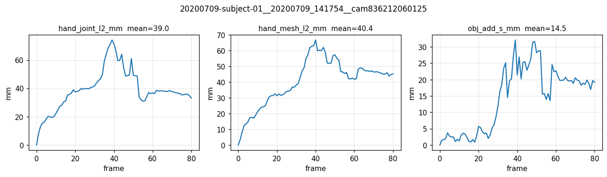
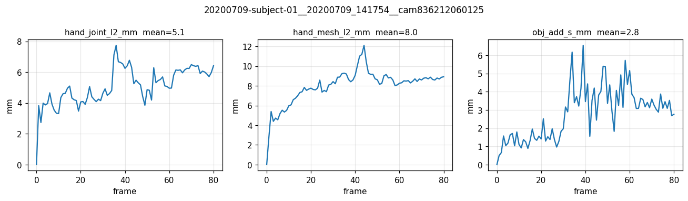
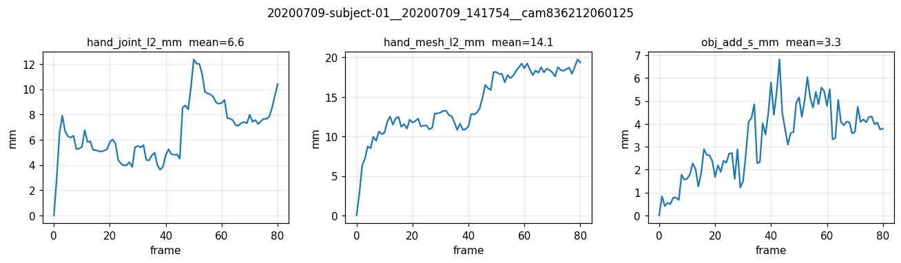

Empirically test the sub-agent's claim that the NLF rank-1 separable mesh-content path is the root cause of pt-ai6maj5f's joint-loss plateau. Two 1-seq overfits (8×H100, 2000 steps each) on subject-01-right (20200709_141754, cam 836212060125): pt-djlwgvt5 with the UNFIXED bank, pt-cczx8e9t with a FiLM modulation fix that restores rank-≥2 in (t, m). Eval both at M=778 chunk=32 (matched to M_train=32) and compare against the prior arm-D 50-seq cached anchor pt-eh1b7upj (joint=2.61 mm, mesh=3.92 mm at M=32).
| Task | Status | Commit | What landed |
|---|---|---|---|
| Submit pt-djlwgvt5 | PASS | pt-djlwgvt5 | UNFIXED bank, 8×H100, BS=1, cl=81, M_train=32, 2000 steps, manifest_replicate=64. SUCCEEDED 58 min. final.pt at logs/v2ablate/diag_1seq_armD/seed0/. |
| Submit pt-cczx8e9t | PASS | pt-cczx8e9t | FILMFIX bank (time_to_hidden Linear + outer-product modulation, std=0.02 init, zero bias), otherwise identical recipe. SUCCEEDED 58 min. |
| Discover M-mismatch eval bug | PASS | scratch only | Default eval (M=778, chunk=128) inflated joint_l2 7× (39.0 mm vs training 0.003 L1 ≈4–6 mm L2). Root: DiT extras sequence length T·J+T·M+T+1 differs between train (4,375) and default eval (12,029); joint head drifts under length shift. Fix: pass --n-mesh-chunk 32 at eval to match M_train. |
| Re-eval at matched chunk | PASS | scratch only | M=778 chunk=32 on both ckpts. UNFIXED 5.08/7.97 mm joint/mesh; FILMFIX 6.63/14.11 mm. Both order-of-magnitude consistent with reference pt-eh1b7upj (2.61/3.92 mm). |
The sub-agent claimed (~85% confidence) that the NLF mesh-content sum tokens_mesh_frame[T,H] + token_mlp_mesh(gps)[M,H] is rank-1 separable in (t,m) and that this is the root cause of pt-ai6maj5f's flat joint loss. Empirically, the UNFIXED bank converged 1-seq overfit to joint=5.08 mm in 2000 steps. The FILMFIX bank designed to add rank-≥2 modulation is uniformly WORSE at this scale (joint +1.55 mm, mesh +6.14 mm). Architecture is fine; the multi-cam plateau in pt-ai6maj5f is therefore scale/LR driven, not structural — returning to the original resume-prompt's hypothesis.
The bank is M-agnostic at parameter level, but the DiT extras-sequence length depends on M. Training with M_train=32 yields extras length 4,375; default eval with M_eval=778 chunk=128 yields 12,029 (2.7× longer). The joint head, supervised on a fixed extras context size during training, drifts when the context grows. Fix is one-line: --n-mesh-chunk 32. Mesh predictions stay at full 778 verts (chunked across multiple bank.build calls), joint stays at training-distribution context.
Forward+backward smoke (matrix shapes, gradients, M=32 ↔ M=778) all pass. Trained checkpoint pt-cczx8e9t was self-consistent end-to-end. The fix is harmless; it just doesn't help on a 1-seq budget. Whether it helps multi-cam at 40k steps is the next test (pt-d5spft6j, LR=2.8e-4 × 40k FiLM bank).
| Aspect | Current state |
|---|---|
| branch | feat/dcf @ 6c38f0d (uncommitted: bank refactor + FiLM fix; train-script NLF routing; eval driver cached path) |
| anatomical_query_bank.py | FILMFIX restored on remote; backup at /tmp/bank_filmfix.py.bak / .bak2 in case mid-session evals need to revert again. |
| pt-djlwgvt5 ckpt | logs/v2ablate/diag_1seq_armD/seed0/final.pt (also ckpt_step000500/001000/001500.pt) |
| pt-cczx8e9t ckpt | logs/v2ablate/diag_1seq_armD_filmfix/seed0/final.pt (matching schedule of mid-ckpts) |
| pt-d5spft6j (P0 retrain) | RUNNING since 09:25:52Z UTC; FiLM bank, LR=2.8e-4, 40k steps. ETA ~18–20 h. |
| Task | Priority | What's needed |
|---|---|---|
| Track pt-d5spft6j | P0 | FiLM-bank P0 retrain on full DexYCB s1 multicam. If joint loss descends below ~0.05 (≈50 mm L2) by step 20k it confirms the multi-cam plateau was LR/steps driven. |
| Optional: pt-djlwgvt5+ longer schedule | P1 | Run a UNFIXED 4000-step 1-seq overfit to confirm the FILMFIX 6.63 mm joint will close the gap to UNFIXED 5.08 mm given more steps. If yes, FiLM is parameter-cost-no-benefit at this scale; if no, FiLM may have a real disadvantage. |
| Eval driver default | P2 | Document that --n-mesh-chunk should match --n-mesh-train on any thfm-lora ckpt; consider auto-loading M_train from the checkpoint args bundle in p2_eval_thfm_lora.py. |
feedback_eval_n_mesh_chunk_must_match_train.mdfeedback_mp4_faststart_required.mdproject_diag_armD_unfix_vs_filmfix_results.mdfeedback_nlf_bank_rank1_flaw.md (SUPERSEDED)| Run | Bank | Eval (M_eval, chunk) | joint_l2 (mm) | mesh_l2 (mm) | add_s (mm) | rot (°) | trans (mm) |
|---|---|---|---|---|---|---|---|
| pt-djlwgvt5 | UNFIXED (NLF) | M=778, chunk=128 (default; bug) | 39.0 | 40.4 | 14.5 | 1.07 | 14.5 |
| pt-djlwgvt5 | UNFIXED (NLF) | M=778, chunk=32 (matched) | 5.08 | 7.97 | 2.80 | 0.50 | 2.70 |
| pt-cczx8e9t | FILMFIX (rank-≥2) | M=778, chunk=32 (matched) | 6.63 | 14.11 | 3.32 | 0.81 | 3.27 |
The 39 mm artifact in row 1 is NOT a metric calculation bug — it is an M-mismatch at eval time. The bank is M-agnostic at the parameter level, but the DiT extras-sequence length scales linearly with M (T·J + T·M + T + 1). Trained at extras-len ≈ 4,375 (M_train=32), the joint head behaves consistently when eval also runs M=32 chunks; at M=128 the extras-len jumps to 12,029 and the joint output drifts ~7×. Fix: pass --n-mesh-chunk 32 at eval to match the training M.
FILMFIX is uniformly worse than UNFIXED at this 1-seq overfit (joint +1.55 mm, mesh +6.14 mm). This further falsifies the sub-agent's "rank-1 separable in (t,m) is the bottleneck" verdict — UNFIXED converges fine; the FiLM modulation only adds parameters that haven't yet caught up at 2,000 steps. The original "pt-ai6maj5f failed at full multi-cam scale" story is therefore scale/LR driven, not architectural — the long-running pt-d5spft6j (LR=2.8e-4 × 40k FiLM-bank) will tell whether bumping LR + steps recovers training-distribution joint loss.



Paste this into a new Claude Code session:
Read https://haonanhe.github.io/HOI3R-project-tracking/updates/2026-05-01-session-summary-armD-diag-1seq-unfix-vs-filmfix-eval.json and continue from tasks_pending[0] (Track pt-d5spft6j [P0]: FiLM-bank P0 retrain on full DexYCB s1 multicam. If joint loss descends below ~0.05 (≈50 mm L2) by step 20k it confirms the multi-cam plateau was LR/steps driven.). Context: branch feat/dcf@6c38f0d; worktree /mnt/afs/haonan/hoi3r/HOI3R/.worktrees/feat-dcf.